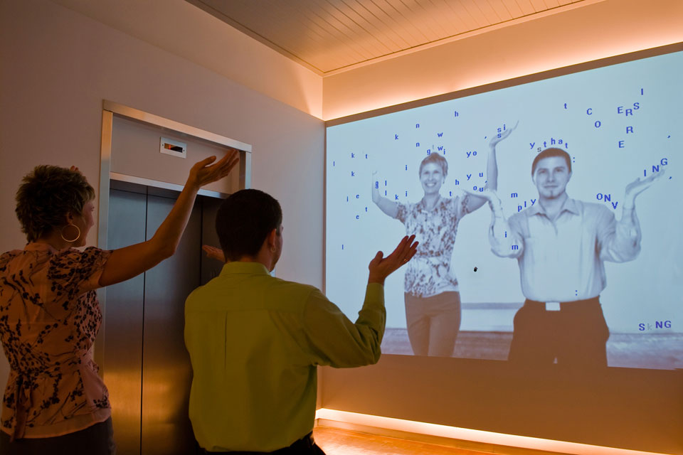

Text Rain - Camille Utterback (1999)
Camille Utterback's Text Rain “is an interactive installation in which participants use the familiar instrument of their bodies, to do what seems magical—to lift and play with falling letters that do not really exist. In the Text Rain installation participants stand or move in front of a large projection screen. On the screen they see a mirrored video projection of themselves in black and white, combined with a color animation of falling letters. Like rain or snow, the letters appears to land on participants’ heads and arms. The letters respond to the participants’ motions and can be caught, lifted, and then let fall again. The falling text will ‘land’ on anything darker than a certain threshold, and ‘fall’ whenever that obstacle is removed. If a participant accumulates enough letters along their outstretched arms, or along the silhouette of any dark object, they can sometimes catch an entire word, or even a phrase. The falling letters are not random, but form lines of a poem about bodies and language. ‘Reading’ the phrases in the Text Rain installation becomes a physical as well as a cerebral endeavor.”